Principal
Tina
"The site should feel professional and modern — I'd like it to be closer to St. John's School."
Redesigning Houston's oldest nonprofit Chinese school website — from a fragmented, outdated experience into a unified, parent-friendly platform.
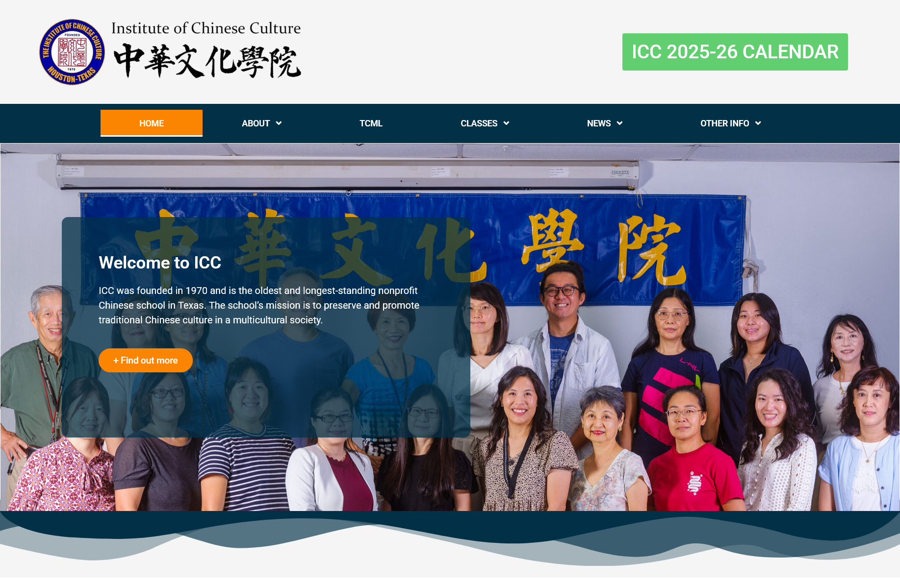
The Institute of Chinese Culture (ICC), founded in 1970, serves hundreds of Houston families across Saturday Chinese School, a Mandarin Immersion Preschool, and Adult Classes.
I was brought in as the sole UX designer to lead the redesign from research through prototyping, working directly with school leadership and a development team in Bangalore.
Through stakeholder interviews and analysis of the existing site, five core pain points emerged:
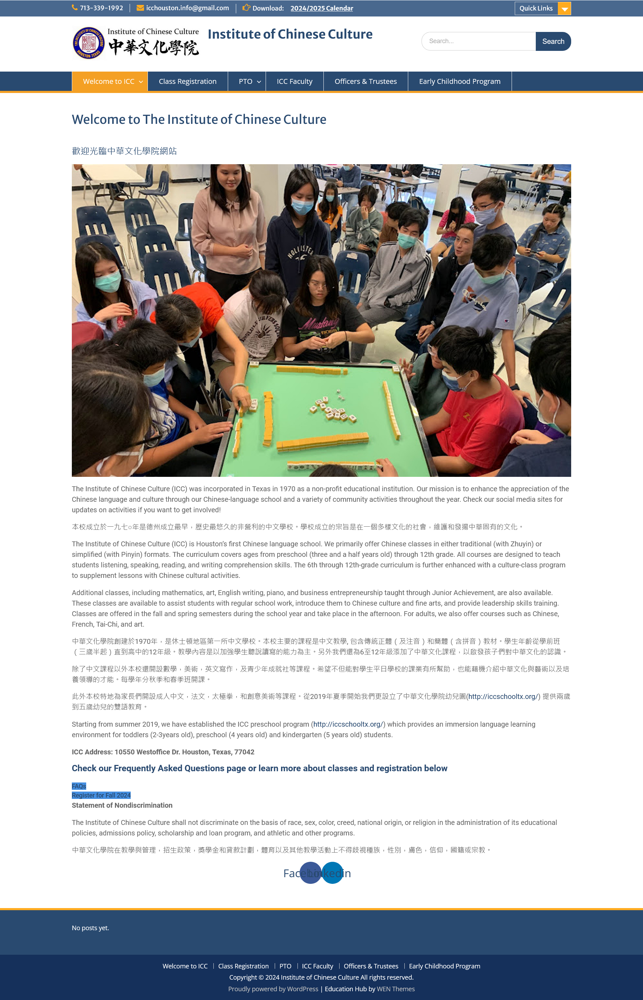
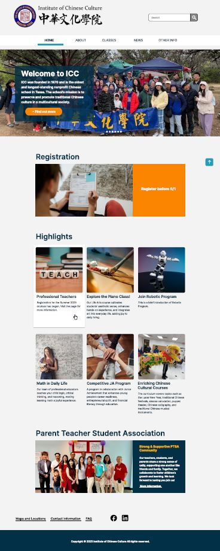
Before: confusing navigation with hidden links / After: clear top-level structure with sidebar sub-nav
I conducted interviews with three key school staff members to surface real needs, and defined two user tasks to anchor the design process.
Principal
Tina
"The site should feel professional and modern — I'd like it to be closer to St. John's School."
Vice Principal
Jennifer
"We need to clearly separate the three programs so parents don't confuse them."
Registrar
Jing Yi
"Registration info needs to be much clearer — maybe a tab layout would help."
Rather than merging the two sites, I designed a clear hierarchy: icc-houston.org as the primary destination, with contextual links guiding users to iccschooltx.org for Pre School details. This preserved both domains while eliminating the confusion of parallel structures.
IA flow mapping ICC_1 (main site) vs ICC_2 (Pre School branch) — created in Figma
Decision 01
Replaced flat nav + hidden Quick Links with a clear structure: HOME / ABOUT / CLASSES / NEWS / OTHER INFO, with left-sidebar sub-navigation within each section. No more buried pages.
Before:
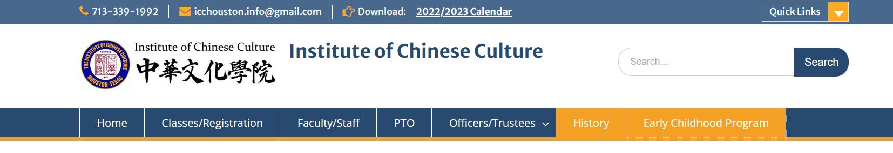
After:
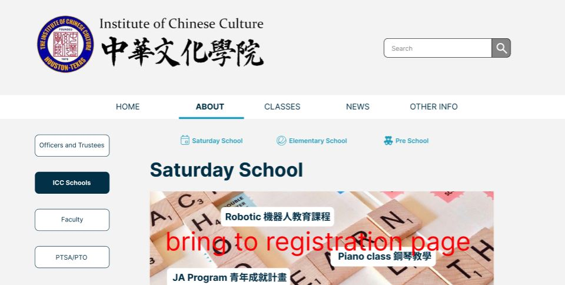
Decision 02
Used consistent tab navigation (Saturday School / Elementary / Pre School) across About, Classes, Contact, and Locations pages — so parents can switch program context without navigating away.
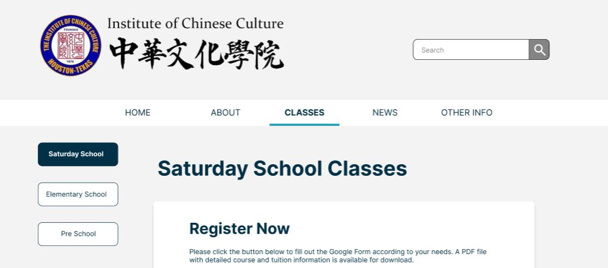
Decision 03
Moved registration to the top of both the homepage and Classes page. Three clearly labeled buttons replace plain-text links, reducing friction for the site's most critical task.
CTA Button at Homepage:
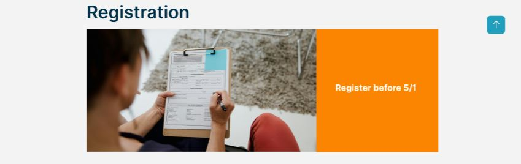
CTA Buttons at Classes Page:
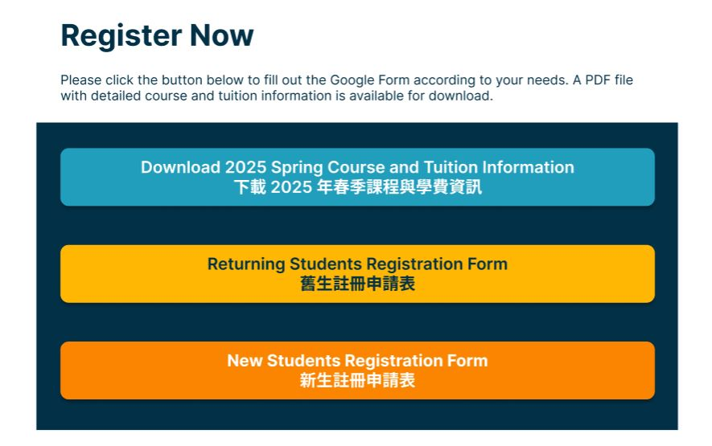
Decision 04
Each event album shows a 5-photo preview with a "See All Photos" link to the school's Google Drive. The site stays lightweight, and staff can manage photos without developer involvement.
Decision 05
A frequently reported pain point — parents not knowing which campus to go to. Each program tab on the Locations page shows address details alongside an embedded Google Maps preview with a direct link.
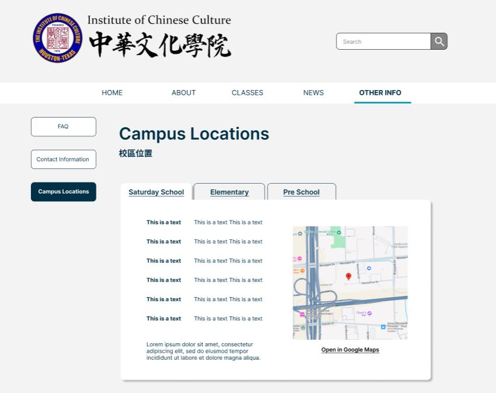
Decision 06
Introduced a unified color palette (Navy #023047 + Orange #FB8500 + Teal #219EBC), clear typographic hierarchy, and bilingual content blocks — replacing the previous ad-hoc WordPress theme styling.
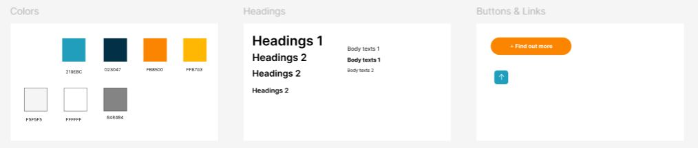
All pages were prototyped in Figma, covering both wireframe structure and visual design. Key flows — homepage, registration, gallery, and locations — were validated with the client before handoff to the development team.
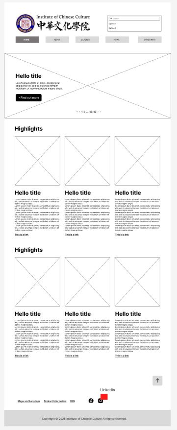
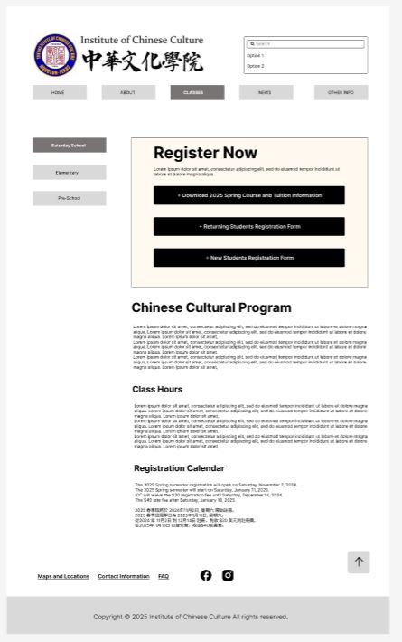
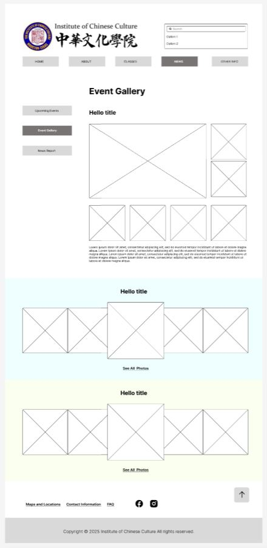
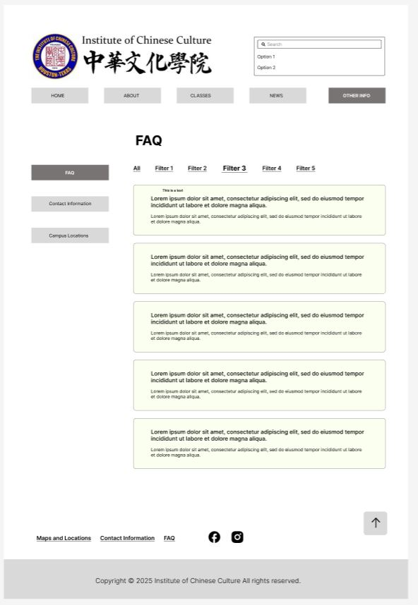
The redesigned site launched in 2025 and is now active at icc-houston.org. Key outcomes from the redesign:
Two confusing domains → one navigable experience
Homepage → Classes → Register, no dead ends
School can update content independently via WordPress
Note: The live site reflects client adjustments and WordPress theme constraints made during implementation — some visual and structural details differ from the original Figma prototype.
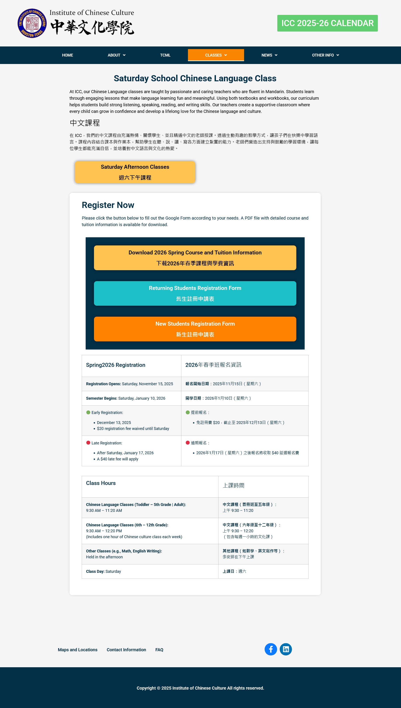